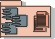

Artifacts >
Artifacts >
 Deployment Artifact Set >
Deployment Artifact Set >
 Product... >
Deployment Unit
Product... >
Deployment Unit
Artifacts >
Deployment Artifact Set >
Product... >
Deployment Unit
Artifact:
| ||||||||||||
 Deployment Unit |
A deployment unit consists of a build (an executable collection of components), documents (end-user support material and release notes) and installation artifacts. A deployment unit is typically associated with a single node in the overall network of computer systems or peripherals. |
| UML representation: | Package, stereotyped as <<deployment unit>> |
| Role: | Configuration Manager |
| Input to Activities: | Output from Activities: |
The Deployment Unit package consists of a build (an executable collection of components), documents (end-user support material and release notes) and installation artifacts. A Deployment Unit is sufficiently complete to be downloadable, and run on a node. This definition fits the cases where the product is available over the internet, the Deployment Unit can be downloaded directly and installed by the user. In case of "shrinkwrap" software, the Deployment Unit is adorned with distinct packaging consisting of artwork and messaging and sold as a "product". The contents of the Deployment Unit are noted in the Bill of Materials.
In an automated environment the Deployment Unit should be creatable at any given time. However, most projects can expect to create deployment units once a product is almost ready - this can happen in the late Construction Phase and throughout the Transition Phases. Earlier in the Transition Phase when the product is in the "almost ready condition" the Deployment Unit is released to the beta-testers. Once the testing is over, and the various bugs resolved, the Deployment Unit is available for general release in the latter Transition Phase iterations.
The Deployment Unit is created by the Configuration Manager, who is the custodian of the overall project repository of artifacts, and used by the Deployment Manager for distribution for beta-testing and repackaging into a "product".
Document tailoring decisions in the Artifact: Configuration Management Plan.
|
Rational Unified
Process
|